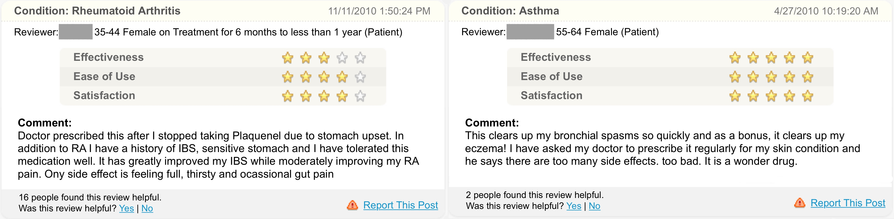
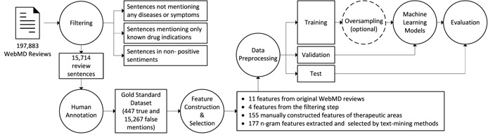

Drug repositioning has prominent advantages of lower safety risk and development cost than developing new drugs. It has attracted broad interests from the biomedical community. In the past decades, computational approaches have examined biological, chemical, literature, and electronic health record data for systematic drug repositioning. But due to the limitations of these data sources, neither of them alone appears sufficient for drug repositioning research. In recent years, patients report and discuss their medication experiences on social media sites more and more often. As the data is generated from real patients, the translational hurdle from the cell line or animal model to human is bypassed. Therefore, Boshu Ru and his dissertation advisor Dr. Lixia Yao investigated whether social media data can be a new, independent data source to be combined with other existing data sources to generate stronger drug repositioning signals and reduce the false positive rate.
In their first work [1], Boshu, Kimberly, and Lixia examined medication outcome information on four social media sites, namely WebMD, PatientsLikeMe, YouTube and Twitter. They found that WebMD has the best quality for patient reviews in terms of effectiveness, side effects, adherence and costs. Patients also report unexpected desirable usages and disease comorbidity, which requires advanced text mining methods for analysis.
Fig. 1. Examples of serendipitous drug usage mention on WebMD. In the example on the left, a patient reported that his irritable bowel syndrome (IBS) symptoms were alleviated when taking sulfasalazine to treat rheumatoid arthritis. In the example on the right, an asthma patient taking prednisone reported the improvement of her eczema.
In their second work [2], Boshu, Charles, Yong, and Lixia built a computational pipeline (Fig. 2) to investigate the feasibility of mining fast-growing online patient forum data to identify serendipitous drug usages. Their best prediction model achieved an AUC score of 0.937 to predict real mention of serendipitous drug usages on the independent test dataset, with a precision equal to 0.811 and a recall equal to 0.476. Many predictions, including metformin and bupropion for obesity, tramadol for depression and ondansetron for irritable bowel syndrome with diarrhea, were also supported by the scientific literature.
Fig. 2. A workflow to identify serendipitous drug usages in patient forum data.
On Feb 21, 2017, Boshu presented this work at the 10th International Conference on Health Informatics at Porto, Portugal (acceptance rate: 21%).
Currently Boshu and Dr. Yao are still working on improving the performance of the system with the use of advanced feature engineering and natural language processing methods.
References:
[1] Ru B., Harris K. and Yao L. (2015). A Content Analysis of Patient-Reported Medication Outcomes on Social Media. In Proceedings of the 15th IEEE International Conference on Data Mining - Data Mining in Biomedical Informatics and Healthcare (DMBIH) Workshop, pages 472-479. Atlantic City, NJ, USA. DOI: 10.1109/ICDMW.2015.150
[2] Ru B., Warner-Hillard B., Ge Y. and Yao L. (2017). Identifying Serendipitous Drug Usages in Patient Forum Data - A Feasibility Study. In Proceedings of the 10th International Joint Conference on Biomedical Engineering Systems and Technologies - Volume 5: HEALTHINF, pages 106-118. Porto, Portugal. DOI: 10.5220/0006145201060118